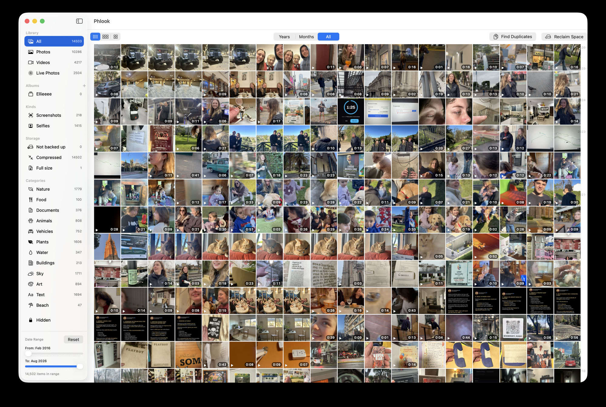

The familiar grid-and-viewer of Apple Photos — but every photo and video stays a plain file in a real folder on your disk. No proprietary library. No lock-in. Yours forever.

Photos buries your whole library inside a giant proprietary .photoslibrary bundle. Your pictures aren't really files anymore — they're locked inside one app, hard to move, hard to back up, impossible to open with anything else.
PHLOOK simply reads the files in your PHLOOK folder. Move them, copy them, back them up, open them in anything. The app is only a window onto your photos — never a wall around them.
All the polish of a modern photo app, running entirely on your Mac — never touching your originals.
Optionally, PHLOOK keeps your full-resolution masters on an external SSD and a crisp 10%-size copy of everything on your Mac. Scroll your entire life locally — and when you need a true original, it's one click away on the drive.
Build the app and drop it in Applications.
Import straight from an iPhone, or drop files in the staging folder and run one command.
Open Phlook. Browse, organize, hide, dedupe — everything's just files, yours to keep.
It's your photos. Keep them that way — as plain files you'll still be able to open in fifty years.
Download for Mac